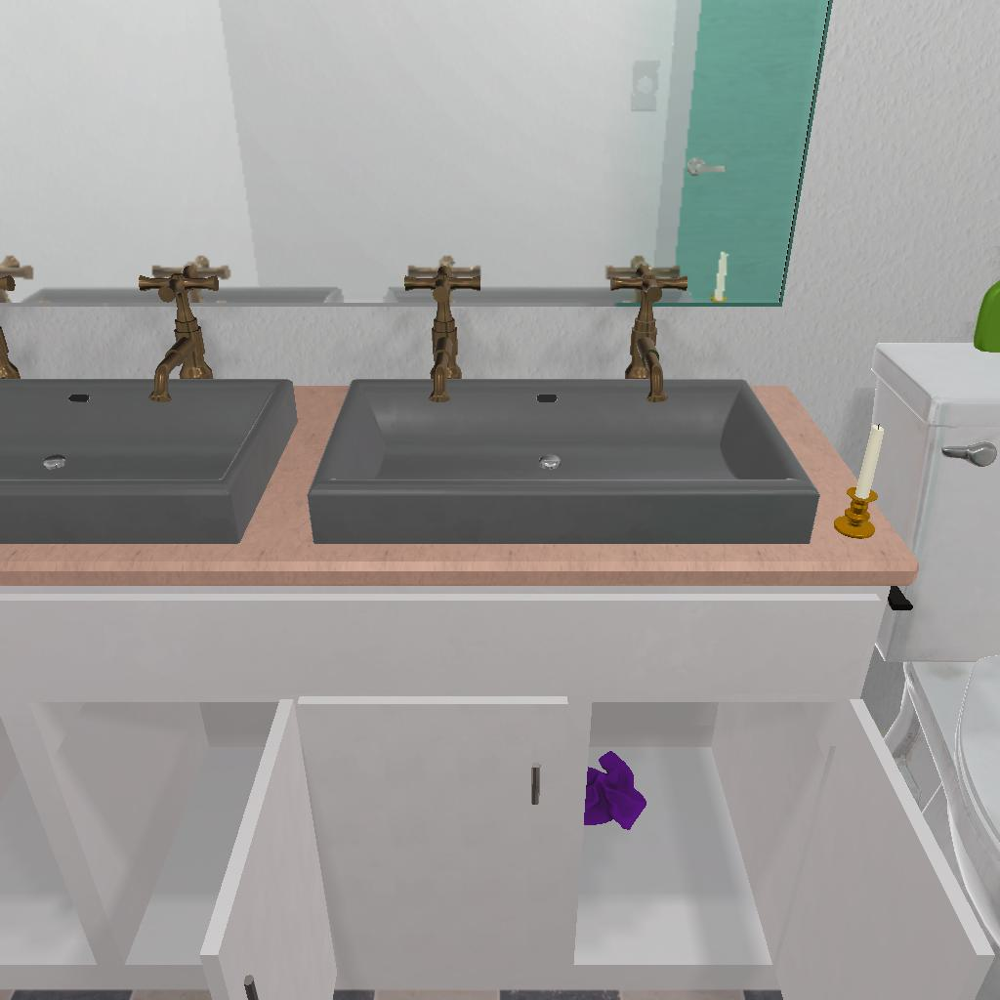

---------------------------------------------------------task: 9---------------------------------------------------------
--------------------------------------------------------------------------------------------------------------------------------------------------------------------
--------------------------------------------------------------------------------------------------------------------------------------------------------------------
Step:--------------------------------------------------------------------------19-------------------------------------------------------------------------------
----------------------------------------
VLM Prompt:
Image1:
Image2:
Image3:
**Instruction**
1. Analyze the provided images to identify all visible household objects and compare the difference between images (e.h. whether the object is opened or not and taken on hand or not), focusing on those relevant to the task description "put some soapbottle on toilet."
2. Use the analysis of images and the task hint "The agent must find an object of the desired type, pick it up, find the correct location to place it, and put it down there." to answer the question: what is the most reasonable action in the choices for the task description "put some soapbottle on toilet"?
3. Decide and write the answer using the template: The answer is: (i): , where i is the real number. If there is no desired object in images, search every place based on **Initial Observation** to find the object. And if no one is exactly correct, choose a similar answer.
**Initial Observation**
You are in the middle of a room. Looking quickly around you, you can see bathtub (1), bathtubbasin (1), toilet (1), cabinet (1-4), sink (1-2), countertop (1), sinkbasin (1-2), toiletpaperhanger (1), towelholder (1), garbagecan (1), handtowelholder (1)
**Answer Choices**
(1): go to bathtub 1
(2): go to bathtubbasin 1
(3): go to toilet 1
(4): go to cabinet 1
(5): go to cabinet 3
(6): go to sink 1
(7): go to sink 2
(8): go to countertop 1
(9): go to cabinet 4
(10): go to sinkbasin 1
(11): go to sinkbasin 2
(12): go to toiletpaperhanger 1
(13): go to towelholder 1
(14): go to garbagecan 1
(15): go to handtowelholder 1
(16): open cabinet 2
(17): close cabinet 2
(18): take faucet 1 from cabinet 2
(19): take faucet 2 from cabinet 2
(20): take cloth 1 from cabinet 2
(21): take candle 1 from cabinet 2
(22): take spraybottle 1 from cabinet 2
**Answer**
Let's think step by step by following the instructions.
----------------------------------------
----------------------------------------
Original Response:
Firstly, analyzing the provided images, we can see that cabinet 2 is open, and there are various objects inside it, including a purple cloth and objects that appear to be faucets and a candle. There is no soap bottle visible in any of the images.
Considering the task description "put some soapbottle on toilet," the agent must find a soap bottle, pick it up, and place it on the toilet. Since there is no soap bottle visible in the images, the agent must search for it.
Based on the initial observation, possible locations where a soap bottle might be found include the cabinets, sink, countertop, or sinkbasin. The agent has already opened cabinet 2, but there is no soap bottle there.
The most reasonable action from the given choices, considering the task and the objects seen in the images, would be to continue searching the cabinets. Cabinet 1 and cabinet 3 are not mentioned in the images, and cabinet 4 is closed. Therefore, the agent should look into one of the other cabinets.
The answer is: (4): go to cabinet 1
----------------------------------------
----------------------------------------
>>> Refine Original VLM Response and Get Pure Action: go to cabinet 1
----------------------------------------
-----------------------------------------------------------------
Running time: 41.661070823669434 seconds
Total Money: 4.7718900000000035
-----------------------------------------------------------------
-----------------------------------------------------------------
Text Observation:You arrive at loc 3. The cabinet 1 is open. On the cabinet 1, you see a faucet 1, a faucet 2, a cloth 1, a candle 1, and a spraybottle 1.
-----------------------------------------------------------------
UNSUCCEED